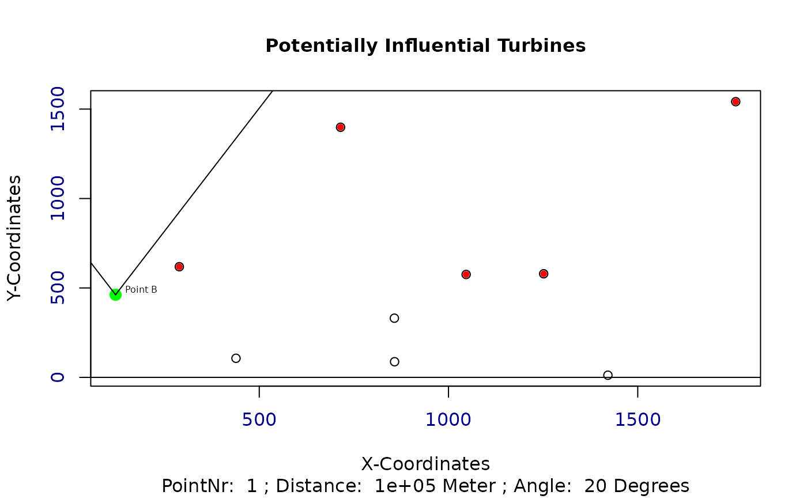
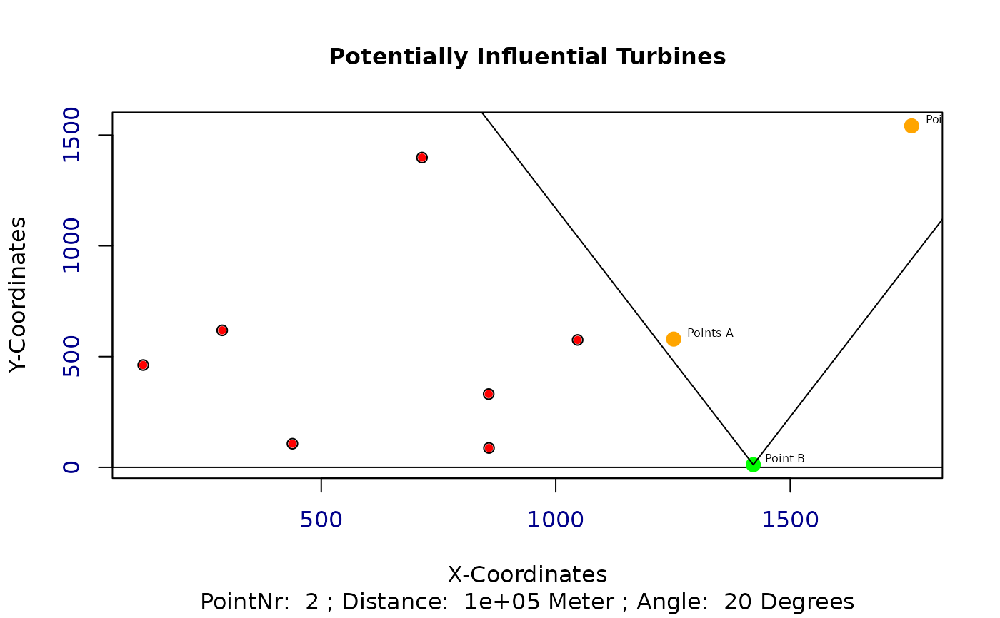
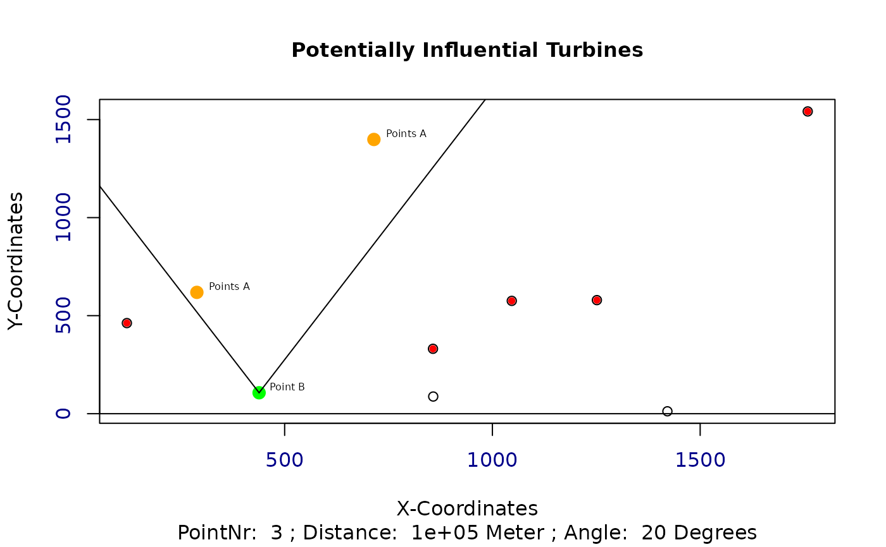
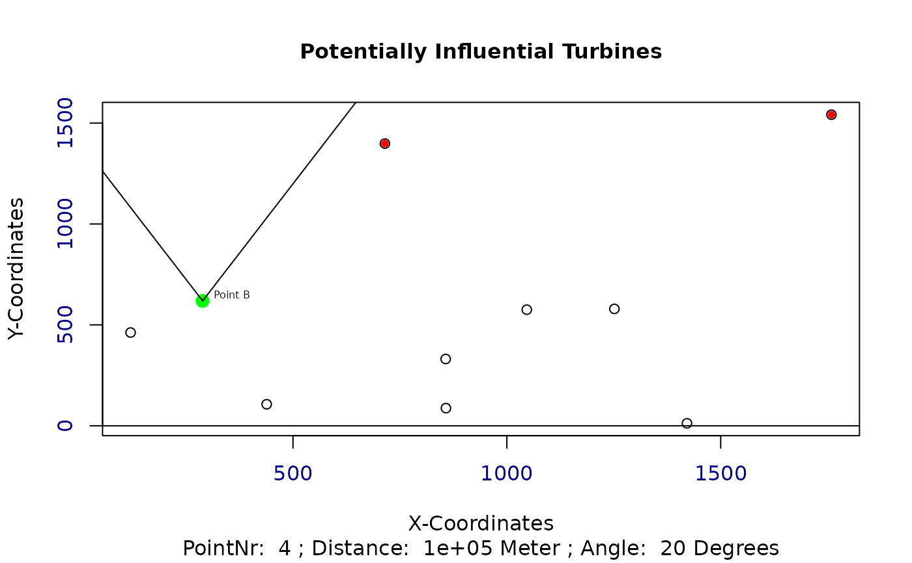
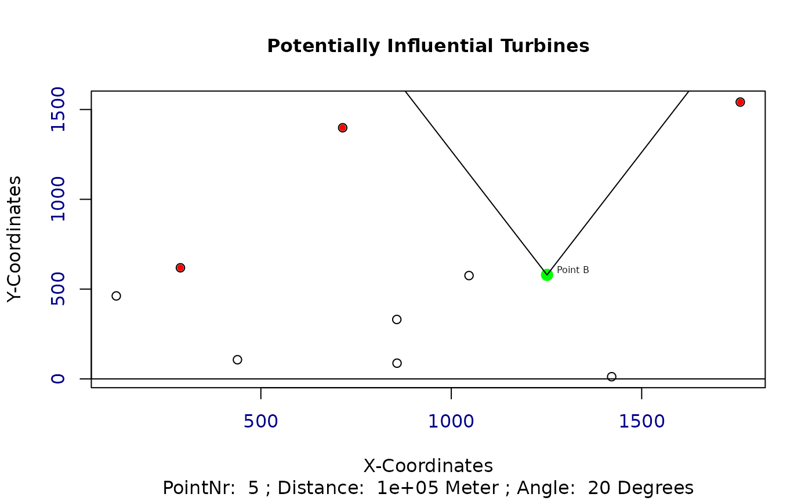
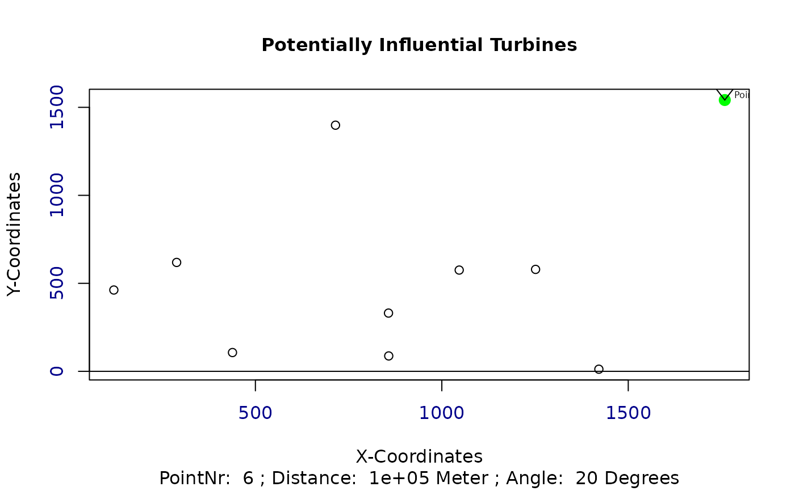
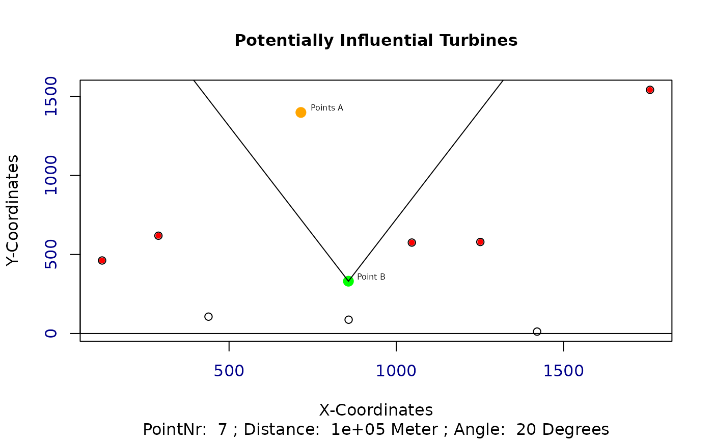
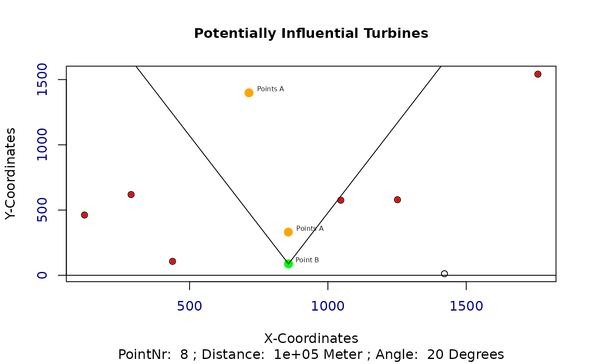
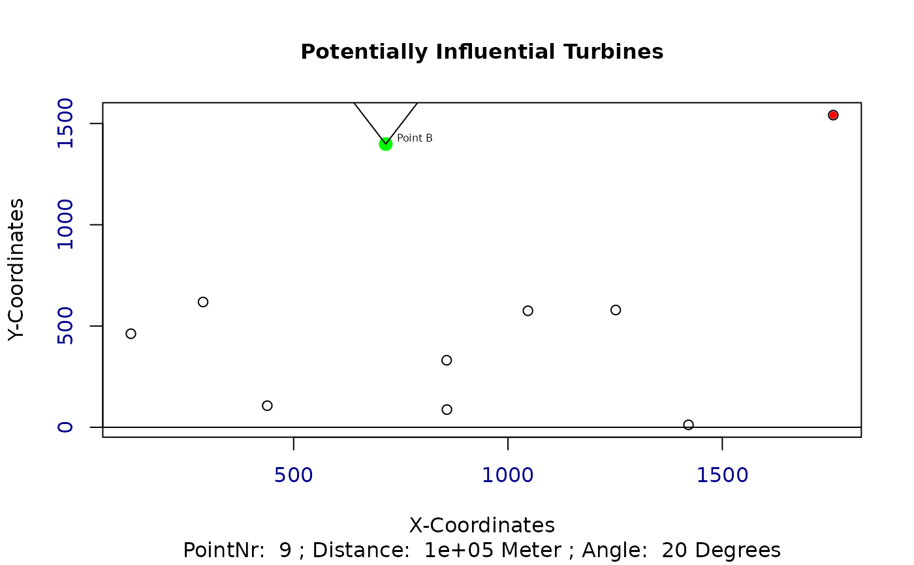
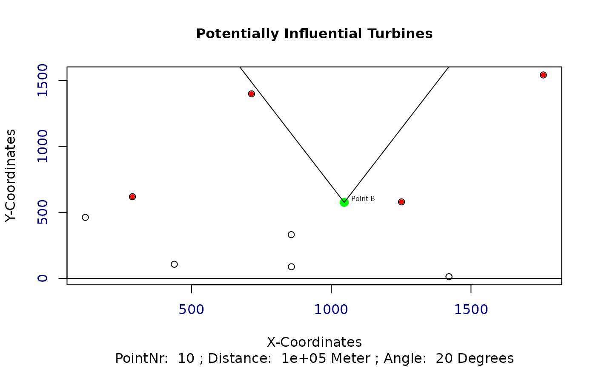

Find all turbines that could potentially influence another turbine and save them to a list.
Arguments
- t
A data.frame of the current individual with X and Y coordinates
- wnkl
The angle from which wake influences are considered to be negligible
- dist
A numeric value indicating the distance, after which the wake effects are considered to be eliminated.
- polYgon
A shapefile representing the considered area
- dirct
A numeric value indicating the current wind direction
- plotAngles
A logical variable, which is used to plot the distances and angles. Default is
FALSE
Value
Returns a list of all individuals of the current generation which could potentially influence other turbines. List includes the relevant coordinates, the distances and angles in between and assigns the Point ID.
See also
Other Wind Energy Calculation Functions:
barometric_height(),
calculate_energy(),
circle_intersection(),
get_dist_angles()
Examples
## Exemplary input Polygon with 2km x 2km:
library(sf)
Polygon1 <- sf::st_as_sf(sf::st_sfc(
sf::st_polygon(list(cbind(
c(0, 0, 2000, 2000, 0),
c(0, 2000, 2000, 0, 0)
))),
crs = 3035
))
t <- st_coordinates(st_sample(Polygon1, 10))
t <- cbind(t, "Z" = 1)
wnkl <- 20
dist <- 100000
dirct <- 0
res <- turbine_influences(t, wnkl, dist, Polygon1, dirct, plotAngles = TRUE)









